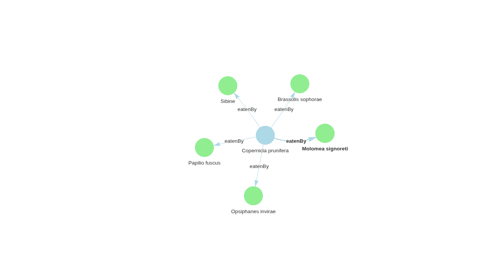
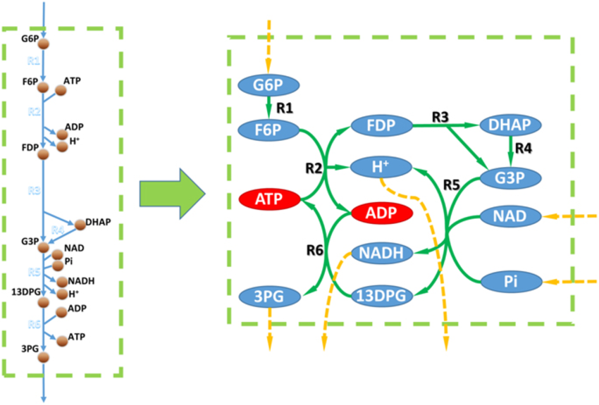
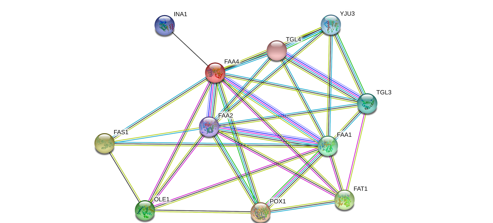
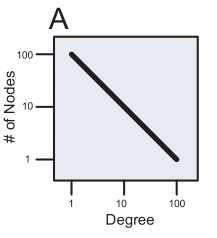
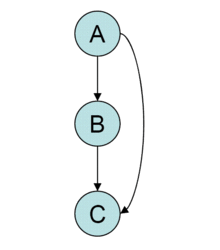

03 — Redes Biológicas
1 O que são redes?
Redes são estruturas ou entidades que conotam a relação entre:
- Objetos
- Indivíduos
- Entidades
Onde:
- Nós/Vértices: representam os indivíduos.
- Arestas: representam as relações.
1.1 Alguns tipos de redes
- Redes sociais
- Redes de computadores
- Redes neurais
- Redes de telecomunicações
- Redes biológicas
2 O que são redes biológicas?
Exemplo introdutório — rede de predação: carnaúba por inseto, ilustrando como até uma relação ecológica simples (predador–presa) pode ser representada como uma rede.

Formalmente, redes biológicas são redes em que os elementos são dados biológicos. São abstrações computacionais/matemáticas baseadas em dados experimentais.
E quais são os dados biológicos? São dados sobre animais, plantas, microorganismos, genes, proteínas, regulações, etc. — que tenham alguma relação entre si.
Dependendo do tipo de dado e das relações, podemos ter diferentes tipos de redes biológicas.

(Jeong et al., Nature, 2001; Rual et al., Nature, 2005).
2.1 Exemplos de redes biológicas
2.1.1 Redes Metabólicas
É o conjunto completo de processos metabólicos de uma célula ou organismo.
- Nós: substratos e produtos.
- Arestas: reações metabólicas convertendo um composto em outro.
- Hiperaresta: conceito avançado para representar reações com múltiplos substratos/produtos.

(Zhang, Cheng & Hua, Qiang, 2015. Applications of Genome-Scale Metabolic Models in Biotechnology and Systems Medicine. Frontiers in Physiology, 6.)
2.1.2 Redes de Co-expressão
Relação entre transcritos expressos ou reprimidos concomitantemente. Genes co-expressos podem:
- Ser regulados pelo mesmo fator de transcrição;
- Estar funcionalmente relacionados;
- Ser membros da mesma via;
- Codificar proteínas do mesmo complexo proteico.

(Prieto, C.; Risueño, A.; Fontanillo, C.; De Las Rivas, J. Human gene co-expression landscape: confident network derived from tissue transcriptomic profiles.)
2.1.3 Redes de Interação Proteína-Proteína
- Proteínas interagem entre si para desempenhar suas funções celulares.
- Proteínas interagem formando complexos ou participando de vias comuns.
- A interação entre proteínas pode significar a formação de um complexo proteico, ou proteínas que funcionam no mesmo processo celular.

2.2 Propriedades Globais de Redes Complexas
2.2.1 Distância e Caminho Mais Curto (Shortest Path)
- Distância: número de arestas em um caminho mais curto (shortest path) conectando dois vértices.

- Dos caminhos possíveis entre um vértice e outro, o menor caminho é aquele com o menor número de vértices ou arestas atravessados da origem ao destino.

- Diâmetro: a maior distância entre qualquer par de vértices. Para encontrar o diâmetro de um grafo, primeiro encontra-se o caminho mais curto entre cada par de vértices; o maior comprimento entre esses caminhos é o diâmetro do grafo.

2.2.2 Peso (Weight Factor)
Pesos são atributos ou valores que podem ser atribuídos às arestas de um grafo. Quando o grafo possui arestas com pesos, ele é chamado de grafo valorado ou ponderado.
Exemplos de possíveis valores atribuídos a arestas em redes biológicas:
- Fluxo
- Massa
- Probabilidade


2.3 Centralidades
Indicadores de centralidade identificam os vértices mais importantes dentro de um grafo. As mais relevantes para redes biológicas são:
- Centralidade de Grau (Degree Centrality)
- Centralidade de Proximidade (Closeness Centrality)
- Centralidade de Intermediação (Betweenness Centrality)
- Centralidade de Autovetor (Eigenvector Centrality)
- Centralidade de Alavancagem (Leverage Centrality)
- Centralidade de Difusão (Diffusion/Katz Centrality)
- Centralidade de Intermediação de Fluxo (Flow Betweenness Centrality)
2.3.1 Centralidade de Grau (Degree Centrality)
É definida como o número de arestas adjacentes a um vértice, ou seja, o número de arestas que um vértice possui (Degree: número absoluto de conexões).
- Centralidade de Grau Normalizada: o grau absoluto dividido pelo número máximo de conexões possíveis (n − 1, onde n é o número total de nós na rede). Isso permite comparar nós de redes de tamanhos diferentes, resultando em um valor entre 0 e 1.
- Em redes direcionadas, definimos:
- Grau de entrada (in-degree);
- Grau de saída (out-degree).
- Interpretação: um nó com alta centralidade de grau é um conector ou hub da rede — tem interação direta com muitos outros elementos. Na biologia, isso frequentemente indica um elemento funcionalmente crucial: se perturbado, o impacto na rede (e, por consequência, no sistema biológico) tende a ser grande.
2.3.2 Centralidade de Proximidade (Closeness Centrality)
Quantifica quão próximo um nó está de todos os outros nós na rede. Diferente da centralidade de grau (que conta conexões diretas), a de proximidade leva em conta a distância geodésica (o caminho mais curto) para alcançar todos os outros nós.
Um nó com alta centralidade de proximidade pode alcançar todos os outros nós da rede com poucos passos intermediários — ele está no centro da rede no sentido de eficiência de comunicação ou disseminação de informação.
Nota
Exemplo: a alta centralidade de proximidade do α-cetoglutarato (α-KG) indica que ele é um ponto de confluência estratégico — um “grande terminal de ônibus” do metabolismo celular, por onde passam muitas rotas metabólicas. Modificar a disponibilidade desse metabólito (ex.: superexpressando a enzima que o produz, ou fazendo knockdown de uma enzima que o consome para outras vias) pode ter um impacto amplo e eficiente em redirecionar o fluxo de carbono de fontes diferentes em direção à via sintética de interesse.
Exemplo de cálculo (nó 1, distâncias até os demais nós): 1→2: 1; 1→3: 2; 1→4: 2; 1→5: 2; 1→6: 3; 1→7: 1 — média das distâncias: 1,83.
2.3.3 Centralidade de Intermediação (Betweenness Centrality)

Quantifica o número de vezes que um vértice age como uma ponte ao longo do caminho mais curto entre dois outros nós — ou seja, quantas vezes um vértice x faz parte dos menores caminhos entre os outros vértices do grafo.

Um nó com alta centralidade de intermediação tem poder de controle desproporcional sobre o fluxo de informação, recursos ou influência na rede. Se esse nó for removido, a rede pode se fragmentar, e a comunicação entre diferentes grupos se tornará muito menos eficiente, ou até impossível.
Exemplo de cálculo (calculando para o vértice 2):
- 1→3: 2; 1→4: 1; 1→5: 0
- 3→1: 2; 3→4: 2; 3→5: 3
- 4→1: 2; 4→3: 2; 4→5: 0
- 5→1: 0; 5→4: 0; 5→3: 4
- Somando: 18
2.3.4 Centralidade de Autovetor (Eigenvector Centrality)
Mede a influência de um nó na rede levando em conta não apenas o número de suas conexões (grau), mas também a importância dos nós aos quais ele está conectado. Um nó é importante se estiver conectado a muitos outros nós importantes.
Aplicação: identificar genes mestres ou proteínas-chave em redes de regulação. Um fator de transcrição que regula outros fatores de transcrição importantes terá uma centralidade de autovetor muito alta, indicando seu papel central na hierarquia de controle da rede.
Nota
Exemplo: identificar os pontos de controle mestres em uma rede de regulação gênica de uma planta, visando aumentar a produção de um metabólito secundário de interesse (ex.: um corante natural). Manipular um nó com alta centralidade de autovetor pode causar um efeito cascata desejado em toda a rede regulatória.
2.3.5 Centralidade de Alavancagem (Leverage Centrality)
Compara a conexão de um nó com a de seus vizinhos: calcula a diferença entre o grau de um nó e o grau médio de todos os seus vizinhos, normalizada pela soma dos graus. Nós com alta alavancagem estão conectados a nós que têm, em média, muito menos conexões do que eles mesmos.
Aplicação: identificar nós periféricos críticos, ou “conectores de periferia” — frequentemente genes ou proteínas especializadas que atuam como interface crucial entre um módulo altamente conectado (ex.: um complexo proteico) e o resto da rede.
Nota
Exemplo: em uma rede de interação proteína-proteína de um patógeno, um nó com alta alavancagem pode ser uma proteína de membrana essencial para a virulência, mas que não é um hub central. Ela pode ser um ótimo alvo para uma vacina ou anticorpo monoclonal, pois sua inibição pode isolar um módulo funcional crítico sem perturbar drasticamente todo o sistema.
2.3.6 Centralidade de Difusão (Diffusion/Katz Centrality)
Generalização da centralidade de autovetor: leva em conta não apenas as conexões diretas e de vizinhos imediatos, mas todos os caminhos na rede, atribuindo um peso maior aos caminhos mais curtos. A centralidade de Katz soma o número de caminhos de todos os comprimentos que emanam de um nó, penalizando caminhos mais longos.
Aplicação: modelar processos de sinalização ou difusão de metabólitos, capturando a noção de influência de longo alcance.
Nota
Exemplo: modelar como um sinal hormonal (ex.: auxina em plantas) se espalha por uma rede de tecidos para iniciar um processo de crescimento. Identificar os nós com maior centralidade de difusão pode ajudar a prever quais células ou genes responderão mais fortemente ao sinal, permitindo o desenho de estratégias para modular esse processo.
2.3.7 Centralidade de Intermediação de Fluxo (Flow Betweenness Centrality)
Variação da betweenness clássica: em vez de contar apenas os caminhos mais curtos, considera todos os caminhos possíveis entre os nós, assumindo que o fluxo na rede (de informação, metabólitos) se dá como em uma rede de encanamentos. Mede a fração do fluxo total que passa por um nó.
Aplicação: extremamente poderosa para analisar redes metabólicas, já que o fluxo de carbono raramente segue apenas um caminho único e mais curto — ele se distribui por múltiplas rotas.
Nota
Exemplo: ao tentar redirecionar o fluxo metabólico em uma bactéria para maximizar a produção de um bioplástico (ex.: PHA), calcular a centralidade de intermediação de fluxo pode identificar quais enzimas são gargalos reais que controlam a maior parte do fluxo de carbono em direção ao produto desejado, mesmo que não estejam no caminho mais curto. Essas enzimas são alvos prioritários para a engenharia metabólica.
2.3.8 Resumo das Centralidades
| Centralidade | Melhor para… | Exemplo de Aplicação Biotecnológica |
|---|---|---|
| Grau | Identificar hubs conectados | Alvo antibiótico (inibir uma proteína essencial muito conectada) |
| Proximidade | Identificar nós de comunicação rápida | Otimização de vias metabólicas sintéticas |
| Intermediação | Identificar gargalos e pontes | Alvos terapêuticos que desconectam vias de doença |
| Autovetor | Identificar influência hierárquica | Engenharia de redes de regulação gênica |
| Alavancagem | Identificar especializados críticos | Desenvolvimento de vacinas (proteínas de membrana de patógenos) |
| Difusão (Katz) | Modelar sinalização de longo alcance | Prever resposta a hormônios ou fármacos |
| Intermediação de Fluxo | Analisar redes de fluxo (metabolismo) | Superar gargalos em produção de bioprodutos |
2.4 Características de Redes Biológicas
2.4.1 Seis graus de separação
A ideia de que todas as pessoas têm seis ou menos conexões sociais separando-as umas das outras — se fizermos uma cadeia de “amigo de um amigo”, poderíamos conectar duas pessoas em, no máximo, seis passos. Foi originalmente estabelecida por Frigyes Karinthy, em 1929.
Essa ideia pode ser aplicada a várias redes biológicas: em uma rede biológica, a distância entre um vértice e outro é, em média, muito baixa.
2.4.2 Mundo Pequeno (Small World)
Uma rede de mundo pequeno é um tipo de grafo no qual a maioria dos vértices não são vizinhos uns dos outros, mas os vizinhos de qualquer vértice são vizinhos entre si, e a maioria dos vértices pode ser alcançada por todos os outros por um pequeno número de passos.
Nota
Implica que… todos os vértices de uma rede biológica são facilmente alcançados por outros vértices; assim, qualquer perturbação ou sinal em um ponto da rede é rapidamente percebido pelo restante da rede.
2.4.3 Rede Livre de Escala (Scale-Free)
São redes complexas cujo grau de distribuição segue uma lei de potência: a maioria dos vértices tem poucas ligações, contrastando com a existência de alguns vértices com um elevado número de ligações. A probabilidade de um vértice se ligar a um vértice novo é diretamente proporcional ao seu grau, e a probabilidade de um nó ter k ligações decai quando k aumenta, segundo a lei de potência.


Os vértices com alto grau são raros e chamados de hubs. Essas redes são, por norma, mais resistentes a falhas aleatórias, mas mais vulneráveis a ataques direcionados — pois a remoção de um hub compromete desproporcionalmente a conectividade da rede, enquanto a remoção de um vértice qualquer (baixo grau) tem pouco efeito.

2.4.4 Coeficiente de Agrupamento (Clustering Coefficient)
Mede o quanto os vértices de um grafo tendem a agrupar-se — a tendência de formação de grupos coesos, caracterizados por alta densidade de conexões. A maioria das redes reais tende a criar esses grupos coesos.
- Transitividade: se A se conecta a B e B a C, é provável que A se conecte a C.
- É uma propriedade muito comum em redes sociais (círculos de amigos).
- Em redes biológicas, pode indicar módulos funcionais ou complexos proteicos.
2.4.5 Robustez e Adaptabilidade
- Robustez: capacidade de manter uma função ou característica independente das perturbações do meio.
- Adaptabilidade: capacidade de fazer mudanças no sistema em resposta a perturbações do meio.
2.5 Motivos de Redes (Network Motifs)
Motivos em redes são padrões ou sub-grafos recorrentes e estatisticamente significativos dentro de uma rede. Cada um desses sub-grafos, definido por um padrão particular de interações entre os vértices, pode refletir uma estrutura na qual determinadas funções são alcançadas com eficiência.
Sua importância reside em serem blocos de construção evolutivamente conservados que compõem redes maiores, conferindo-lhes funções específicas e robustez. A identificação de motivos ajuda a prever o comportamento do sistema a partir de sua estrutura de conectividade local.

Exemplos:
2.5.1 Feedback Loop (Laço de Retroalimentação)
- Estrutura: um nó regula outro que, eventualmente, regula o primeiro, formando um ciclo. Pode ser positivo (→) ou negativo (⊣).
- Função:
- Positivo: cria estados estáveis irreversíveis (ex.: diferenciação celular).
- Negativo: gera oscilações ou mantém homeostase.
Nota
Exemplo biológico: o ciclo de divisão celular é controlado por um oscilador baseado em um loop de feedback negativo envolvendo as ciclinas e as quinases dependentes de ciclina (CDKs).
2.5.2 Single Input Module (SIM — Módulo de Entrada Única)
- Estrutura: um único nó regulador controla múltiplos nós alvo, sem que haja regulação entre os alvos.
- Função: coordena a expressão sincronizada de um grupo de genes que atuam em uma mesma via biológica.
- Exemplo: um operon em bactérias, onde um único fator de transcrição controla vários genes envolvidos em uma única via metabólica (ex.: operon lac).
2.5.3 Feedforward Loop (FFL — Laço de Alimentação Direta)
- Estrutura: um nó (A) regula outro (B), e ambos regulam um terceiro nó (C): A→B→C e A→C.
- Função: age como um filtro temporal para sinais. Ignora pulsos curtos de entrada e responde apenas a sinais persistentes, evitando ativações desnecessárias.
- Exemplo: na rede de regulação do açúcar em E. coli, o FFL controlado pela CRP (Proteína Receptora de AMPc) garante que os genes do metabolismo de lactose só sejam ativados após um sinal prolongado de ausência de glicose.
2.5.4 Bifan (leque duplo)
- Estrutura: dois nós de entrada regulam dois nós de saída (A→C, A→D, B→C, B→D).
- Função: distribui um sinal para múltiplos destinos simultaneamente, permitindo a coordenação de respostas.
- Exemplo: em redes de sinalização celular, dois receptores ativados (A e B) podem regular a expressão de dois genes efetores (C e D) de forma coordenada.
Baseado em slides de aula de Biologia de Sistemas.